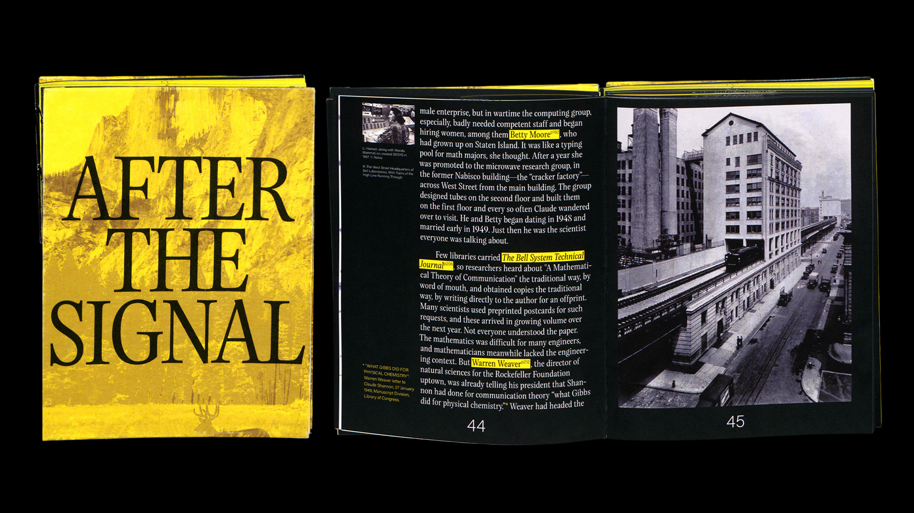
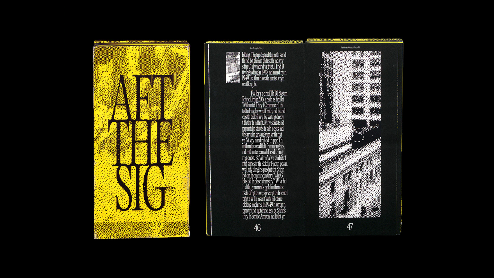
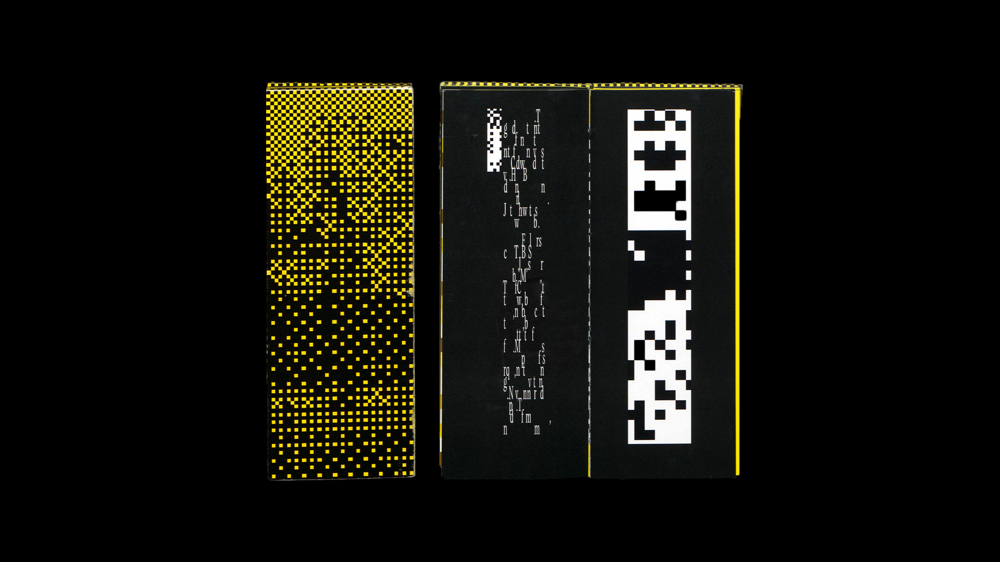
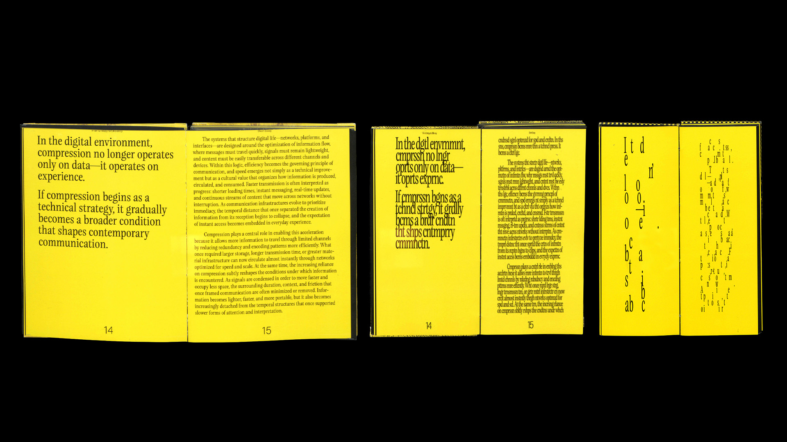
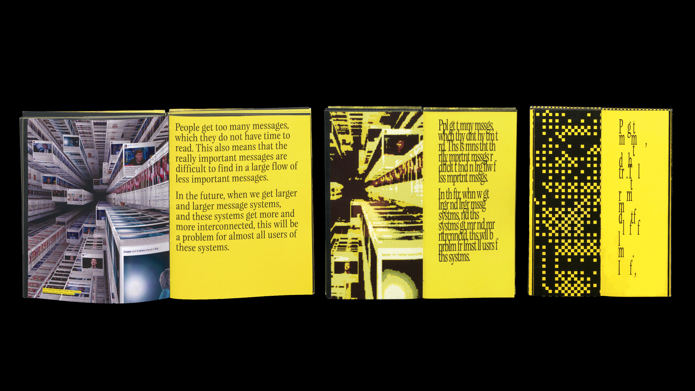
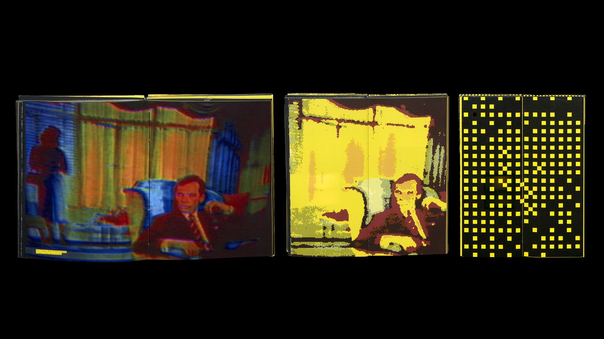
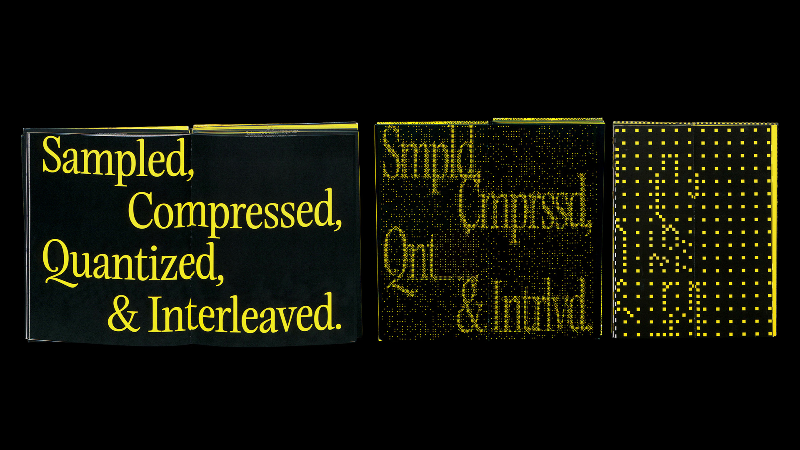
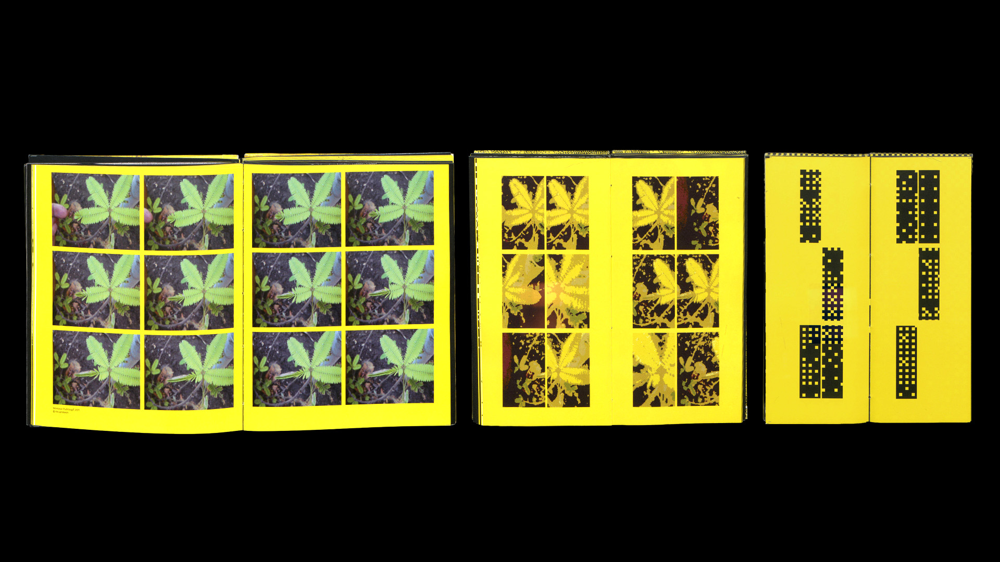
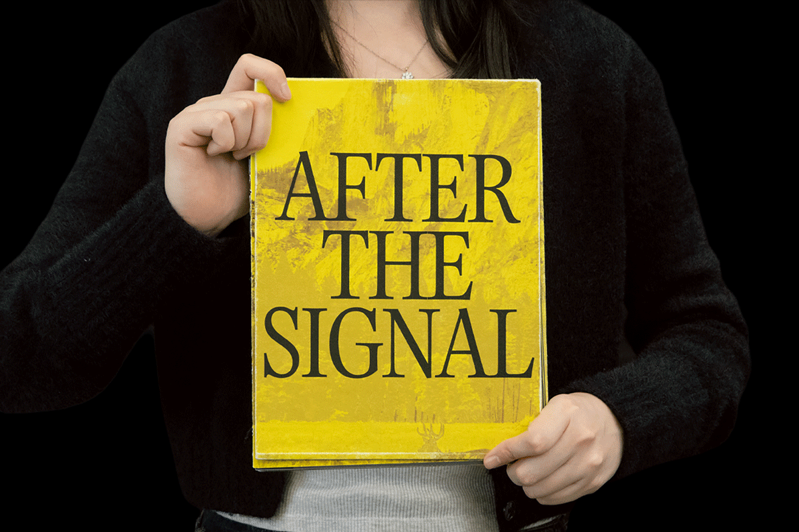

Publication
After the Signal

May 2026
Printed matter
8 x 11 in, 5 x 11 in, 3.8 x 11 in
Printed matter
8 x 11 in, 5 x 11 in, 3.8 x 11 in
The world increasingly reaches us in compressed form. Experiences, memories, and events are translated into images, messages, and streams of data before they arrive through screens. What was once complex and contextual becomes condensed into signals that are transmitted, stored, and circulated. After the Signal asks what happens to meaning in this process—what is preserved, and what is lost.
The project draws from the concept of compression in the information theory of Claude E. Shannon. In communication systems, information is reduced into signals so that it can move through a channel. Contemporary technologies operate in a similar way: emotions become emojis, experiences become images, and conversations become fragments of text. In order to travel widely and quickly, information must be compressed.
Yet compression is never neutral. As information is reduced, elements that once carried meaning can disappear. What remains is a simplified signal, optimized for transmission rather than understanding.
After the Signal is expressed through three books that progressively compress the same body of content. Each book reduces the material further, translating it into a more distilled visual and textual form. Through this staged compression, the work asks viewers to consider what disappears along the way. When only the signal remains, what parts of the original experience—its depth, context, or feeling—have been left behind?
The project draws from the concept of compression in the information theory of Claude E. Shannon. In communication systems, information is reduced into signals so that it can move through a channel. Contemporary technologies operate in a similar way: emotions become emojis, experiences become images, and conversations become fragments of text. In order to travel widely and quickly, information must be compressed.
Yet compression is never neutral. As information is reduced, elements that once carried meaning can disappear. What remains is a simplified signal, optimized for transmission rather than understanding.
After the Signal is expressed through three books that progressively compress the same body of content. Each book reduces the material further, translating it into a more distilled visual and textual form. Through this staged compression, the work asks viewers to consider what disappears along the way. When only the signal remains, what parts of the original experience—its depth, context, or feeling—have been left behind?











